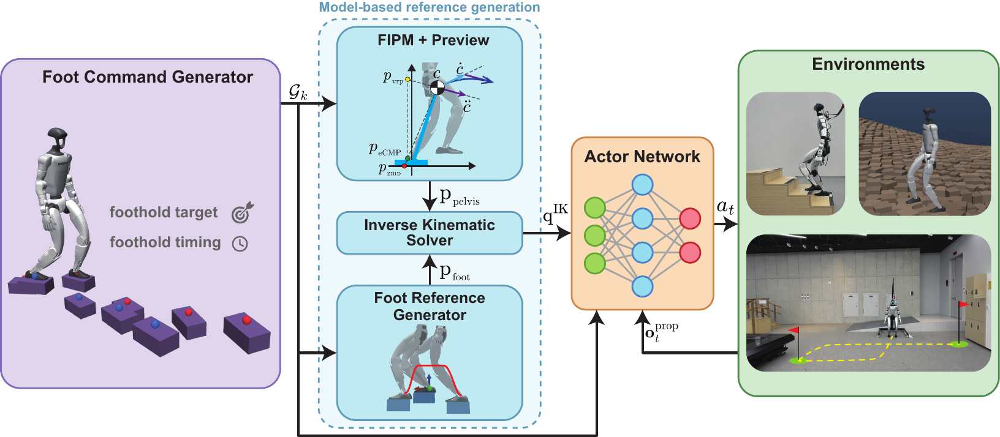
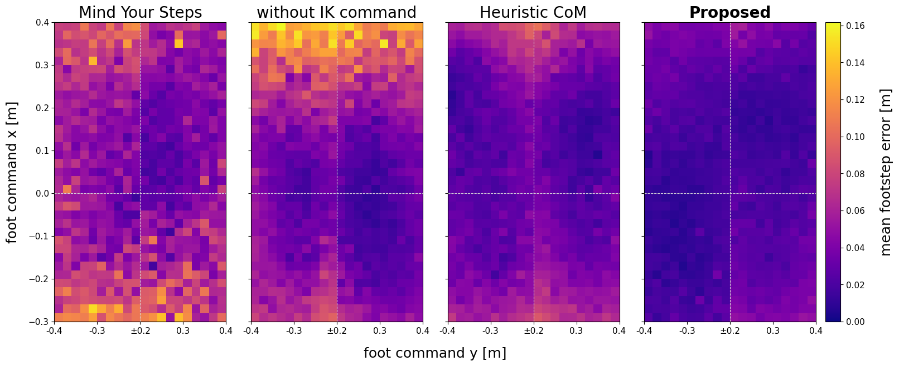
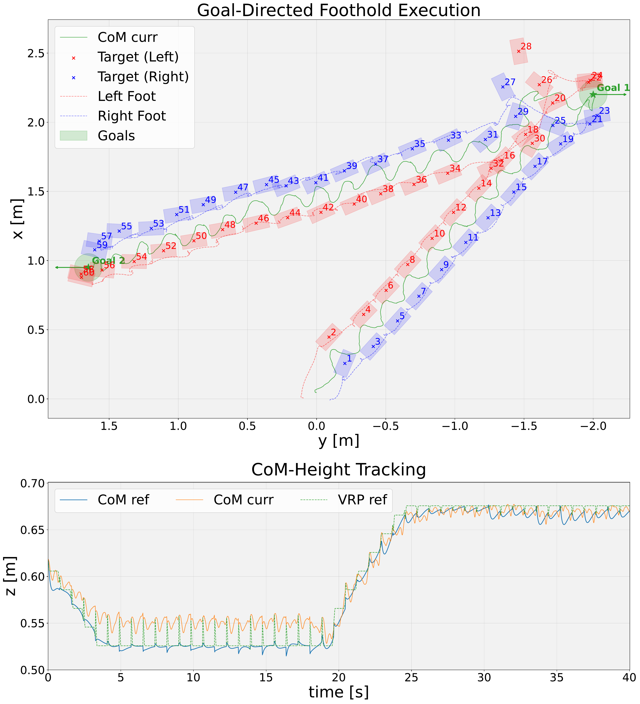

RISE: Reinforcement Learning with Inverted-Pendulum Guidance for 3D Stepping and CoM Elevation
Abstract
Precise foothold execution is essential for humanoid robots operating in real-world environments, where admissible footholds may be narrow, discontinuous, and vertically separated. Such environments also require locomotion over height-varying terrain and explicit control of vertical center-of-mass~(CoM) motion for terrain and task adaptation. We present RISE, a three-dimensional model-guided reinforcement-learning framework that provides foothold-dependent CoM guidance. Given stance-relative 3D foothold, gait, and CoM-height commands, future footholds are converted into virtual repellent point~(VRP) references, from which a floating-base inverted pendulum model~(FIPM)-based preview controller generates 3D CoM trajectories. Together with foot trajectories, these references are mapped through inverse kinematics to joint positions and introduced to the policy as soft guidance. Proposed method enables both height-varying locomotion and terrain-independent body-height modulation, while lightweight preview control computation supports parallel training and online deployment. Using the same learning objective and reward coefficients, policies are trained for humanoids with different morphologies and action interfaces without platform-specific tuning. Simulation and real-robot experiments validate precise foothold tracking, stair ascent, height-modulated loco-manipulation, and robustness to unmodeled contacts.
Framework

Cross-Platform Validation
Simulation Results

Representative planar foothold-tracking error distributions on the Unitree G1 for 5,000 randomly sampled flat-ground commands. From left to right: Mind Your Steps, the policy without the IK reference, heuristic CoM guidance, and the proposed method. All heatmaps share the same color scale.
Real-Robot Results
